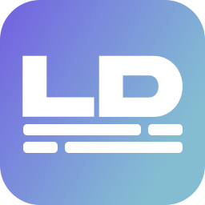

LyricDisplay OBS Dock Dev
Connect to the development headless runtime without opening the main app window.
Run npm run electron-dev:headless, then open the dock controller.
Dock URL: http://localhost:5173/obs-dock

Connect to the development headless runtime without opening the main app window.
Dock URL: http://localhost:5173/obs-dock